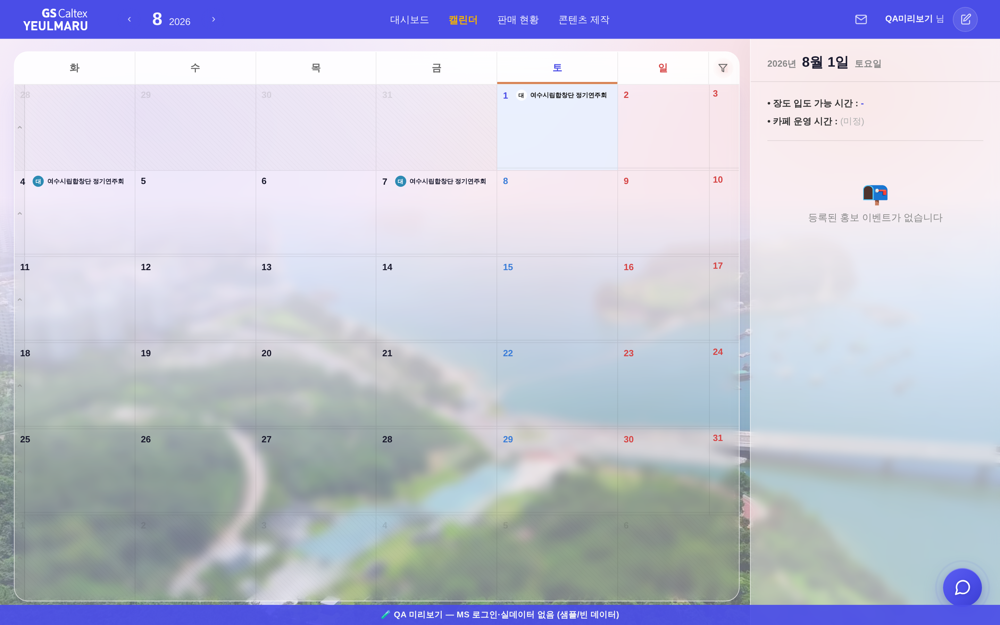
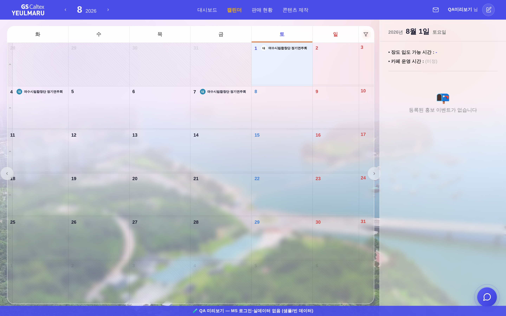

전: 월 이동 수단 = 휠 스크롤·모바일 스와이프(보이는 조작부 없음) · 상단 nav 월네비 화살표뿐.
후: 캘린더 박스 좌·우 세로변 중앙에 ‹ › 버튼 추가 — 형태는 기존 정본 글래스 화살표 .arrow(--glass + backdrop blur(8px) + 라운드 원형) 100% 재사용,
동작은 기존 changeMonth(±1) 그대로(휠·스와이프와 동일 축). 신규 색·신규 형태 0.
① 전체 화면


② 좌측 세로변 확대 (3배)
③ 우측 세로변 확대 (3배)